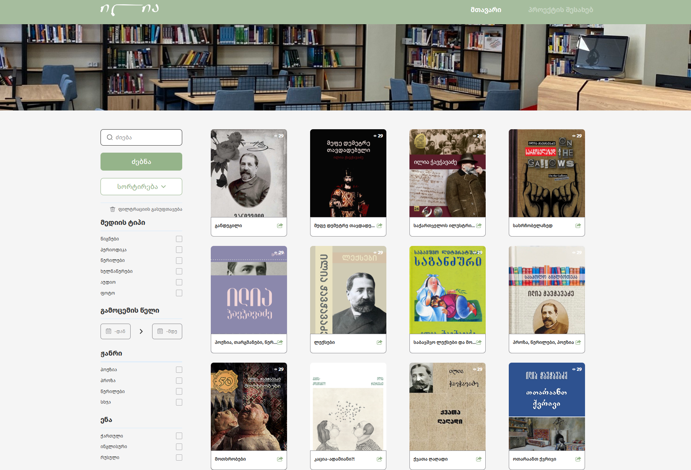
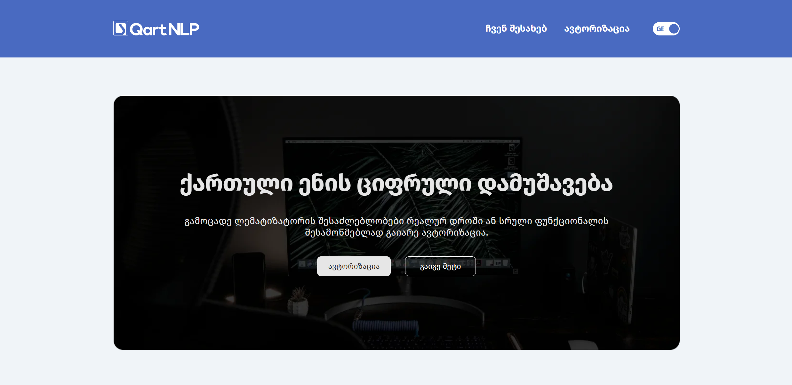
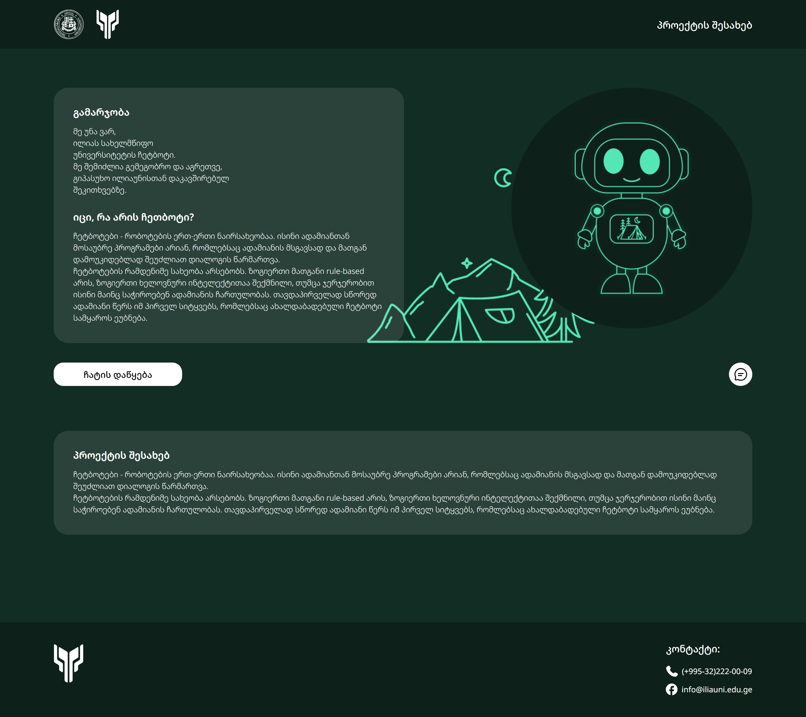

About Me
I am a junior Front-End Developer with hands-on experience in real projects and collaborative teams. I have worked on HTML, CSS, and JavaScript SaaS projects, and I am currently deepening my understanding of essential front-end technologies. Right now, I am advancing in React and learning Next.js and TypeScript by working on real, deployed projects, improving my skills every day. I continuously explore and expand my knowledge in areas I'm passionate about, and I love sharing what I learn with others. I am ready for new opportunities where I can further develop my technical skills and contribute to creating modern, real-world technologies.
Contact Information
- Phone: +995 557 152 542
- Email: nino.gabroshvili.4@gmail.com
- GitHub: github.com/ninogabroshvili17
- LinkedIn: linkedin.com/in/nino-gabroshvili4/
Education
BSc in Computer Science
Ilia State University, Tbilisi | 2022 - present
Experience
SEO Optimization Course
TBC Campus, Tbilisi | Feb 2025 - Present
Learning SEO strategies, keyword research, on-page optimization and modern SEO tools through daily workshops and hands-on projects.
Front-End Acceleration Program (React)
Unilab, Tbilisi | Dec 2025 - Present
Developing React, Next.js and TypeScript by building real-life websites using Tailwind CSS. Collaborating on large codebases via Git/GitHub and Trello with project managers, simulating real team workflows.
Front-End Acceleration Program (HTML, CSS, JavaScript)
Unilab, Tbilisi | Nov 2024 - Mar 2025
Built responsive, interactive web interfaces with HTML, CSS/SCSS and JavaScript, focusing on DOM manipulation and UI functionalities, learning best practices and developing presentation skills.
Projects
Ilia Library

Contributed to the Ilia State University Library website during Unilab's JavaScript Frontend Acceleration Program. Built and styled UI components, improved responsiveness, and added interactive behavior using HTML, SCSS, and JavaScript, collaborating with mentors and fellow frontend developers.
QartNLP

Implemented the frontend for the landing page of a Georgian-language natural language processing project. Focused on layout, responsiveness, and UI using HTML, SCSS, and JavaScript.
Chatbot Camp

Collaborated on a mini frontend project with a chat component. My work was focused on responsiveness, logo layout adjustments, and JavaScript interactions.
Skills
- Languages & Frameworks: JavaScript (ES6+), TypeScript, React, Next.js
- Styling & UI: HTML5, CSS3, SCSS (SASS), Tailwind CSS
- Tools & Collaboration: Git, GitHub, VS Code, Trello
- Web Fundamentals: Responsive design, DOM manipulation and event handling, API usage (fetching and handling data)
- Soft Skills: Team collaboration, independent work, clear and effective communication, adaptability, fast learning, time management, organization, critical thinking, and analytical skills.
Languages
- Georgian - Native
- English - C1
- German - A2